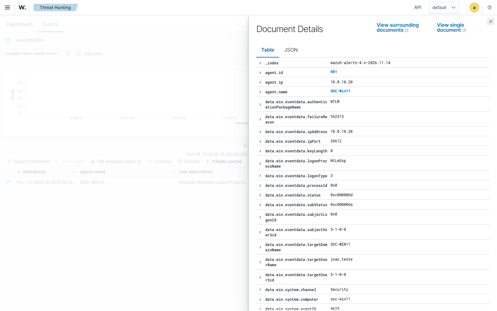
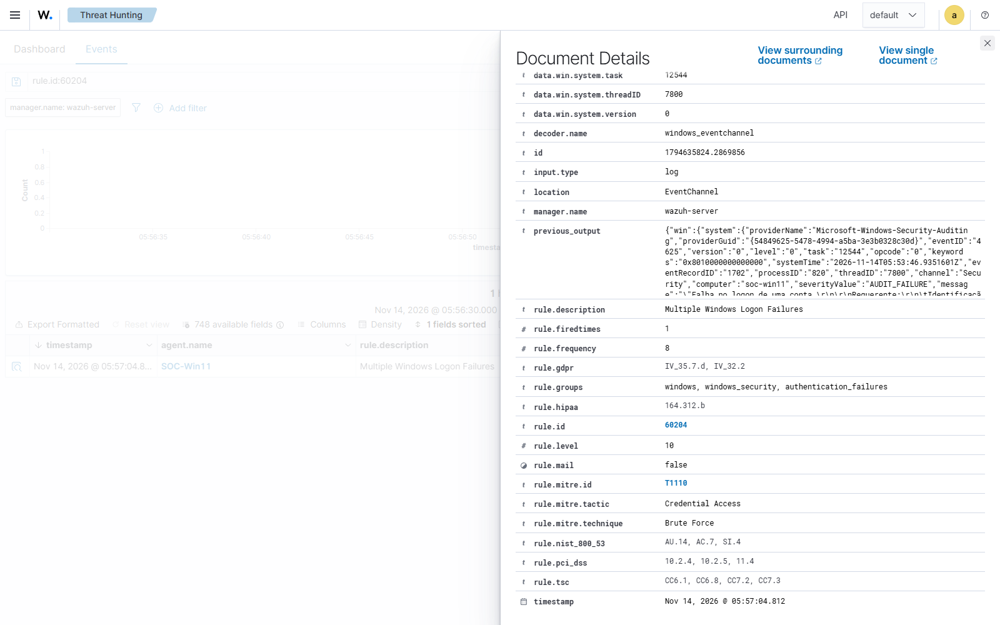
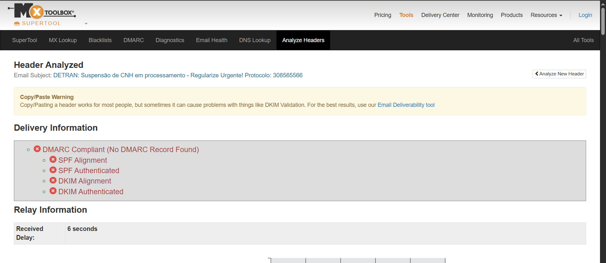
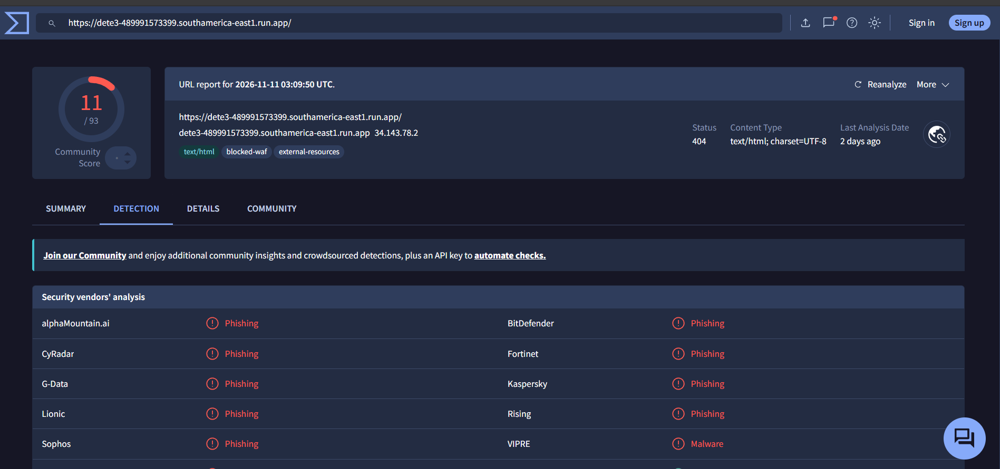
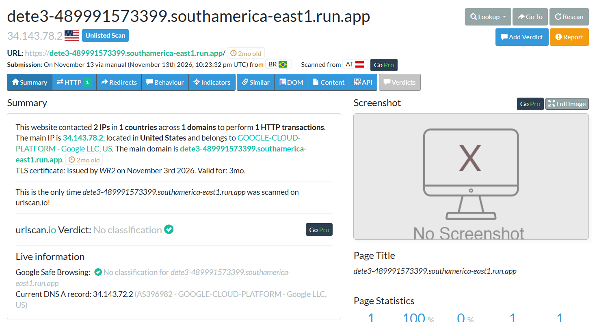

SOC N1 · Blue Team · em formaçãoSOC Tier 1 · Blue Team · in training
Eu ataco meu próprio laboratório
para aprender a defender.I attack my own lab
to learn how to defend.
Portfólio prático de Segurança da Informação. Cada projeto usa dados reais: logs do SIEM, cabeçalhos de e-mail, alertas. Tudo explicado passo a passo, do jeito que um analista de SOC investiga.A hands-on information security portfolio. Every project uses real data: SIEM logs, email headers, alerts. Everything is explained step by step, the way a SOC analyst investigates.
- 2projetos concluídos/em andamentoprojects done / in progress
- 19alertas reais analisadosreal alerts analyzed
- 3VMs no laboratóriolab VMs
ProjetosProjects
02 · Home Lab de SOCSOC Home Lab
Wazuh + Windows 11 com Sysmon + Kali. Ataques simulados, detectados e investigados.Wazuh + Windows 11 with Sysmon + Kali. Simulated attacks, detected and investigated.
ConcluídoDone01 · Phishing "Falso DETRAN""Fake DETRAN" phishing
E-mail de golpe real analisado sem clicar em nada: cabeçalhos, SPF/DKIM/DMARC, truque do "@" na URL, IOCs e denúncias.A real scam email analyzed without clicking anything: headers, SPF/DKIM/DMARC, the "@" URL trick, IOCs and abuse reports.
03 · TryHackMe
Trilha SOC Level 1 com write-ups.SOC Level 1 path with write-ups.
02 · Home Lab
O laboratórioThe lab
Três máquinas virtuais numa rede isolada. O Kali ataca, o Windows 11 é a vítima e registra tudo com o Sysmon, e o Wazuh (SIEM) recebe os logs, correlaciona e gera alertas. Gire o modelo com o mouse e clique em cada máquina.Three virtual machines on an isolated network. Kali attacks, Windows 11 is the victim and records everything with Sysmon, and Wazuh (SIEM) receives the logs, correlates them and raises alerts. Drag to rotate and click each machine.
02 · Cenário 102 · Scenario 1
Brute force de senha via SMB: replay 3DSMB password brute force: 3D replay
Os 19 alertas reais gerados pelo Wazuh em 14/11/2026, entre 05:55 e 05:59 UTC, reproduzidos na ordem em que aconteceram. Aperte ▶ ou clique em qualquer evento da lista para ver o que ele significa e o log original.The 19 real alerts Wazuh raised on 2026-11-14 between 05:55 and 05:59 UTC, replayed in the order they happened. Press ▶ or click any event in the list to see what it means and the original log.
02 · Cenário 102 · Scenario 1
A investigaçãoThe investigation
As perguntas que um analista N1 respondeThe questions a Tier 1 analyst answers
1. Foi mesmo um brute force?1. Was it really a brute force?
Sim. Foram 9 falhas de login (evento 4625) em ~16 segundos, todas do mesmo IP e contra a mesma conta, uma a cada ~2 s. Nenhum humano digitando produz esse ritmo: é automação.Yes. 9 failed logons (event 4625) in ~16 seconds, all from the same IP against the same account, one every ~2 s. No human typing produces that rhythm: it is automated.
2. O ataque teve sucesso?2. Did the attack succeed?
Sim, e esse é o ponto mais importante. 2 segundos depois da última falha, o mesmo IP fez login com sucesso (evento 4624, logonType 3) na mesma conta. A sequência várias falhas → um sucesso é o indicador clássico de senha descoberta. Deixa de ser "tentativa" e vira incidente.Yes, and that is the key point. 2 seconds after the last failure, the same IP logged on successfully (event 4624, logonType 3) to the same account. The many failures → one success pattern is the classic sign of a guessed password. It stops being an "attempt" and becomes an incident.
3. Houve preparação antes do ataque?3. Was there preparation before the attack?
Sim. Às 05:56:39 aparece um login anônimo (null session, NTLM V1) vindo do atacante. É a ferramenta sondando o serviço SMB antes de testar senhas: a fase de reconhecimento.Yes. At 05:56:39 there is an anonymous logon (null session, NTLM V1) from the attacker. That is the tool probing the SMB service before trying passwords: the reconnaissance phase.
4. Os outros "Logon Success" são do atacante?4. Are the other "Logon Success" events from the attacker?
Não. Eles são da conta SISTEMA, com logonType 5 (serviço), iniciados pelo services.exe. É o Windows funcionando normalmente: falso positivo descartado. Separar ruído de ataque é metade do trabalho de um N1.No. They belong to the SYSTEM account with logonType 5 (service), started by services.exe. That is Windows working normally: false positive ruled out. Telling noise from attack is half of a Tier 1 analyst's job.
Os campos que contam a históriaThe fields that tell the story
| CampoField | ValorValue | O que significaWhat it means |
|---|---|---|
ipAddress | 10.0.10.30 | Mesma origem nas falhas e no sucesso: é o mesmo ator.Same source for the failures and the success: same actor. |
logonType | 3 | Login pela rede (SMB), não no teclado da máquina (que seria 2).A network logon (SMB), not at the keyboard (that would be 2). |
status / subStatus | 0xC000006D / 0xC000006A | Usuário existe, senha errada. O atacante já sabia um nome de conta válido.User exists, wrong password. The attacker already knew a valid account name. |
authenticationPackageName | NTLM | Autenticação NTLM, típica de ferramentas de ataque contra SMB.NTLM authentication, typical of attack tools against SMB. |
rule.frequency | 8 | Limite de correlação: o alerta 60204 dispara depois de 8 falhas na janela de tempo.Correlation threshold: alert 60204 fires after 8 failures within the time window. |
⚠️ O que aprendi além do óbvio⚠️ What I learned beyond the obvious
- A etiqueta da regra pode errar. O Wazuh chamou o login de "possible pass-the-hash" (T1550.002), mas o atacante usou a senha descoberta, não um hash. O analista valida o contexto em vez de copiar o rótulo.Rule labels can be wrong. Wazuh called the logon "possible pass-the-hash" (T1550.002), but the attacker used the guessed password, not a hash. The analyst validates context instead of copying the label.
- Detectar não é impedir. O alerta nível 10 disparou, e o atacante entrou 5 segundos depois. Sem resposta automática nem bloqueio de conta, o SIEM só documentou o ataque.Detecting is not preventing. The level-10 alert fired, and the attacker got in 5 seconds later. With no automated response and no account lockout, the SIEM only documented the attack.
- Fuso horário importa. O painel mostra o horário local e o índice guarda UTC. Todo relatório deve citar o fuso.Time zones matter. The dashboard shows local time while the index stores UTC. Every report should state the time zone.
🛡️ Resposta recomendada🛡️ Recommended response
- Conter: desabilitar/resetar
joao.testee encerrar sessões.Contain: disable/resetjoao.testeand kill sessions. - Bloquear 10.0.10.30 (manualmente ou via Active Response do Wazuh na regra 60204).Block 10.0.10.30 (manually or with Wazuh Active Response on rule 60204).
- Investigar o pós-login: o que a conta acessou depois das 05:57:09.Investigate post-logon: what the account accessed after 05:57:09.
- Prevenir: política de bloqueio de conta, senhas fortes, SMB restrito.Prevent: account lockout policy, strong passwords, restricted SMB.
Prints do Wazuh (clique para ampliar)Wazuh screenshots (click to enlarge)





Explorador de logs brutosRaw log explorer
Os documentos exatamente como estão no indexador do Wazuh. Clique numa linha para abrir o JSON completo.The documents exactly as stored in the Wazuh indexer. Click a row to open the full JSON.
| timestamp (UTC) | rule.id | lvl | event | user | src IP | rule.description |
|---|
01 · Phishing
O caminho de um e-mail falso do DETRANThe path of a fake DETRAN email
Um phishing real recebido numa caixa pessoal. Nenhum link foi clicado: a análise toda foi feita no arquivo .eml. Abaixo, o percurso do e-mail em 3D, lido a partir dos cabeçalhos Received. Clique em cada salto.A real phishing email received in a personal inbox. No link was clicked: the whole analysis was done on the .eml file. Below is the email's route in 3D, rebuilt from the Received headers. Click each hop.
O truque do "@" na URL: passe o mouse em cada parteThe "@" URL trick: hover over each part
Passe o mouse (ou toque) sobre a URL acima.Hover over (or tap) the URL above.
O que esta etapa fazWhat this step does
Nesta etapa eu peguei um e-mail de golpe real, que chegou na minha caixa pessoal, e o tratei como se fosse um alerta de SOC dentro de uma empresa. Diante de um e-mail suspeito, um analista N1 precisa responder quatro perguntas: É golpe? Como ele funciona? Alguém foi afetado? O que fazer agora? A investigação inteira foi feita em 8 passos, sem clicar no link em nenhum momento. Clique em cada passo para ver o detalhe.
1Preservar a evidência: exportar o e-mail como .eml
Objetivo
Guardar a "prova" intacta antes de mexer nela, como um perito faz numa cena de crime. Tudo o que vem depois é feito sobre essa cópia, e não sobre o e-mail aberto na caixa de entrada.
Como fiz
- Salvei a mensagem, que estava na pasta Lixo Eletrônico do Outlook.com, como arquivo
.eml, sem clicar em nada dentro dela. - O arquivo
.emlé o e-mail completo em texto puro: todos os cabeçalhos técnicos (que o Outlook esconde) e o corpo codificado. Abrir esse arquivo como texto não executa nada. - Calculei o hash SHA-256 do arquivo:
3f57a838…943fe82. O hash é uma "impressão digital": se um único caractere do arquivo mudar, o hash muda inteiro. Isso prova que a amostra analisada é a mesma recebida (cadeia de custódia). - Mantive o arquivo fora do repositório público (bloqueado no
.gitignore), porque ele contém meu endereço de e-mail e o link ativo do golpe.
Por que importa
Sem a evidência preservada, ninguém consegue revisar ou repetir a análise. Numa empresa, o .eml e o hash vão anexados ao ticket do incidente.
2Ler os cabeçalhos: descobrir de onde o e-mail veio de verdade
Objetivo
O nome que aparece como remetente ("Detran Notifica") pode ser qualquer coisa: o golpista escreve o que quiser. Os cabeçalhos técnicos, por outro lado, são carimbados pelos servidores por onde a mensagem passou, e revelam a origem real.
Como fiz
Cada servidor que repassa um e-mail adiciona uma linha Received no topo da lista. Por isso a leitura é de baixo para cima: a última linha é o primeiro salto, ou seja, a máquina que enviou a mensagem.
O que encontrei
- Primeiro salto:
from [127.0.1.1] (66.42.69.62). O servidor se apresentou como127.0.1.1, que é o endereço de "localhost" (a própria máquina). Isso é típico de um script de disparo em massa rodando num servidor alugado mal configurado. O IP real,66.42.69.62, pertence à Vultr, uma empresa de aluguel de servidores (VPS) nos EUA. - Remetente:
infracao@detran659532. Não existe domínio: falta o final (.gov.br,.com…). Um DETRAN real enviaria de algo como@detran.sp.gov.br. - Message-ID:
…@detran659532, o mesmo pseudo-domínio, gerado automaticamente pelo script. - Destinatário: chamado só pelo e-mail, nunca pelo nome ou CPF. Sinal de campanha em massa: o golpista não sabe quem eu sou.
- Veredito da Microsoft:
SCL 9(nota máxima de spam) eRF:JunkEmail, ou seja, entregue direto no Lixo Eletrônico.
3Verificar a autenticação: SPF, DKIM e DMARC
O que são
- SPF: uma lista, publicada pelo dono do domínio, dos servidores autorizados a enviar e-mails em nome dele. É como uma lista de funcionários autorizados a usar o crachá da empresa.
- DKIM: uma assinatura digital colocada no e-mail pelo servidor de origem. Prova que a mensagem saiu daquele domínio e não foi alterada no caminho.
- DMARC: a regra que o dono do domínio define para o caso de SPF ou DKIM falharem: entregar, mandar para o spam ou rejeitar.
O que encontrei
spf=none, dkim=none, dmarc=none. Atenção ao detalhe: "none" não quer dizer "falhou", quer dizer que não havia nada para verificar, porque o remetente nem tem um domínio. Isso por si só já é um sinal de alerta. Confirmei no MXToolbox: o e-mail reprovou nos 5 controles de autenticação.
Por que importa
Um órgão público verdadeiro envia de um domínio *.gov.br com SPF, DKIM e DMARC aprovados (pass). A ausência total de autenticação, somada a um nome de órgão público, é praticamente uma assinatura de golpe.
4Abrir o conteúdo com segurança: decodificação offline com Python
Objetivo
Ver o que o e-mail mostra e para onde o botão leva, sem abrir o e-mail num navegador ou no Outlook. Ao exibir um e-mail, esses programas podem carregar imagens remotas (que avisam o golpista que meu endereço existe e está ativo) e deixam o link a um clique de distância.
Como fiz
- O corpo de um e-mail vem no formato MIME, dividido em partes e muitas vezes codificado em base64 (um texto embaralhado que não dá para ler a olho).
- Com apoio de IA, desenvolvi o script
analisar_eml.py↗, que usa apenas bibliotecas padrão do Python:email(separar as partes MIME e decodificar o base64),html.parser(ler o HTML como texto e listar os links),urllib.parse(dividir a URL e achar o host real) ehashlib(calcular o hash). Rodei o script no.emle conferi cada resultado com o relatório. - O script só lê texto: ele não renderiza HTML, não executa scripts, não baixa imagens e não acessa a internet. É a forma mais segura de olhar por dentro de uma mensagem maliciosa.
O que encontrei
- Duas partes: uma de texto simples com uma frase de preenchimento ("O HTML nao foi carregado corretamente."), sem link nenhum, e a parte HTML com o conteúdo real.
- Um único link, o botão "REGULARIZAR SITUAÇÃO DA CNH".
- Nenhuma imagem, script,
iframeou formulário. O logo "gov.br" foi montado com letras coloridas em HTML, e não com uma imagem. Isso engana scanners que procuram logotipos falsos em imagens. - A parte de texto simples não tem link, então filtros que leem só essa parte não encontram nada suspeito.
5Extrair e "desarmar" a URL (defang) e descobrir o destino real
O que é defang
É trocar https por hxxps e cada . por [.]. Assim o link deixa de ser clicável em relatórios, tickets e neste site, e ninguém o abre por acidente.
O truque do "@"
Pelas regras de endereços web (RFC 3986), tudo o que vem antes do @ é tratado como "usuário e senha" e ignorado na hora de decidir para qual site ir. O golpista colocou www.office.com-pt-br…principal antes do @ só para a URL parecer da Microsoft. O destino real é o que vem depois: dete3-489991573399[.]southamerica-east1[.]run[.]app (veja a URL dissecada mais acima).
Por que o golpista usou o Google Cloud Run
- O domínio
run.appé do Google e tem boa reputação, então passa por muitos filtros. - O HTTPS vem pronto e válido: a vítima vê o cadeado e acha que o site é seguro.
- A região
southamerica-east1fica em São Paulo: o site responde rápido para vítimas no Brasil. - É descartável: se for denunciado, o golpista recria com outro nome em minutos.
6OSINT passivo: consultar a reputação do IP e da URL
O que é "passivo"
É pesquisar o que o mundo já sabe sobre um endereço sem que o meu computador encoste na infraestrutura do golpista. Os serviços abaixo acessam o site a partir dos servidores deles, ou apenas consultam bases de dados públicas.
O que encontrei
- RDAP / ARIN (o "cartório" dos IPs):
66.42.69.62pertence à Vultr Holdings, nos EUA. Um órgão público brasileiro não envia e-mails de um servidor alugado nos EUA. - AbuseIPDB: 0 denúncias. Isso não quer dizer que o IP é confiável: é típico de um servidor recém-alugado e descartável. A minha denúncia foi a primeira.
- VirusTotal: 11 de 93 fornecedores de segurança marcam a URL como phishing (Kaspersky, BitDefender, Fortinet, Sophos e outros). A última análise do serviço, em 11/11/2026, recebeu HTTP 404 (página não encontrada).
- urlscan.io (scanner na Áustria, 13/11/2026): o servidor estava ativo no Google Cloud, mas não foi possível capturar a página. Junto com o 404, isso indica que a página foi removida ou que existe cloaking: o site só mostra o golpe para visitantes com IP do Brasil.
- Google Safe Browsing: sem classificação. Ou seja, quem usasse o Chrome não veria nenhum aviso ao abrir o link.
7Entender a manipulação: engenharia social e MITRE ATT&CK
Os gatilhos usados
- Autoridade: "NOTIFICAÇÃO OFICIAL", "Sistema Nacional de Infrações de Trânsito", logo gov.br, CNPJ e endereço.
- Medo: "suspensão imediata da CNH por até 12 meses", "possível apreensão do veículo".
- Urgência: "Regularize Urgente!", prazo de só 3 dias (16/10/2026).
- Falsa legitimidade: "você receberá um comprovante por e-mail", "não responda este e-mail".
As inconsistências que denunciam o golpe
- O protocolo do assunto (
308565566) é diferente do protocolo do corpo (DT-785432-2026). - Diz ser um departamento estadual, mas usa um endereço federal em Brasília.
- A infração é genérica ("excesso de velocidade"), sem placa, local ou data.
- Enviado às 00:37 da madrugada.
- O DETRAN avisa sobre infrações pela Carteira Digital de Trânsito, pelo SNE ou por carta, e não por e-mail com link.
MITRE ATT&CK
Mapeei cada ação do golpista para uma técnica do MITRE ATT&CK (o catálogo mundial de técnicas de ataque), da compra da infraestrutura (VPS e Cloud Run) até o clique da vítima. Isso padroniza o relatório e permite comparar este ataque com outros. A lista completa está no quadro abaixo.
8Classificar, conter e denunciar
Classificação
Malicioso: phishing confirmado. Severidade média: o golpe é perigoso, mas o filtro o reteve no Lixo Eletrônico e não houve nenhuma interação com o link.
Contenção
- E-mail mantido no Lixo Eletrônico e reportado à Microsoft como phishing.
- Nenhum clique, nenhuma resposta, nenhum dado enviado.
Denúncias (13/11/2026)
- Google Safe Browsing: URL denunciada como phishing de órgão governamental. ✅
- AbuseIPDB: IP denunciado por phishing e spam (a primeira denúncia desse IP). ✅
- Vultr (dona do servidor de envio): denúncia com os cabeçalhos completos, com meus dados removidos. ✅
- CERT.br (centro brasileiro de resposta a incidentes): campanha completa. ✅
- Google Cloud Abuse: duas denúncias encerradas automaticamente. A triagem do Google é feita por IP, e o IP do Cloud Run é compartilhado por milhares de clientes, então o sistema não conseguiu ligá-lo ao golpista. ❌ Lição: em nuvem "serverless", o bloqueio eficaz é por URL/domínio, não por IP.
Regras de detecção sugeridas
- Alertar quando o remetente não tiver um domínio válido.
- Alertar sobre URLs com
@antes do endereço do site. - Aumentar a nota de risco de e-mails que citam "DETRAN" ou "gov.br" e não vêm de
*.gov.brcom DMARC aprovado.
In this step I took a real scam email that reached my personal inbox and handled it as if it were a SOC alert inside a company. Faced with a suspicious email, a Tier 1 analyst has to answer four questions: Is it a scam? How does it work? Was anyone affected? What now? The whole investigation took 8 steps, without ever clicking the link. Click each step for the details.
1Preserve the evidence: export the email as .eml
Goal
Keep the "evidence" intact before touching it, as a forensic examiner would at a crime scene. Everything afterwards is done on this copy, not on the email open in the inbox.
How
- I saved the message, which was in the Outlook.com Junk folder, as an
.emlfile, without clicking anything inside it. - An
.emlfile is the full email as plain text: every technical header (which Outlook hides) plus the encoded body. Opening it as text runs nothing. - I computed the file's SHA-256 hash:
3f57a838…943fe82. A hash is a "fingerprint": change a single character and the whole hash changes. It proves the analyzed sample is the one received (chain of custody). - I kept the file out of the public repository (blocked in
.gitignore), because it contains my email address and the live scam link.
Why it matters
Without preserved evidence, nobody can review or repeat the analysis. In a company, the .eml and its hash are attached to the incident ticket.
2Read the headers: find where the email really came from
Goal
The sender name shown ("Detran Notifica") can be anything: the scammer types whatever they want. Technical headers, however, are stamped by the servers the message passed through, and they reveal the real origin.
How
Every server that relays an email adds a Received line to the top of the list. So it is read bottom-up: the last line is the first hop, the machine that sent the message.
What I found
- First hop:
from [127.0.1.1] (66.42.69.62). The server introduced itself as127.0.1.1, the "localhost" address (the machine itself), typical of a bulk-mailing script on a poorly configured rented server. The real IP,66.42.69.62, belongs to Vultr, a US server (VPS) rental company. - Sender:
infracao@detran659532. There is no domain: the ending (.gov.br,.com…) is missing. A real DETRAN would send from something like@detran.sp.gov.br. - Message-ID:
…@detran659532, the same pseudo-domain, generated by the script. - Recipient: addressed only by email, never by name or CPF. A mass-campaign sign: the scammer does not know who I am.
- Microsoft's verdict:
SCL 9(maximum spam score) andRF:JunkEmail, delivered straight to Junk.
3Check authentication: SPF, DKIM and DMARC
What they are
- SPF: a list, published by the domain owner, of servers allowed to send email on its behalf. Like a list of staff allowed to use the company badge.
- DKIM: a digital signature added by the sending server. It proves the message came from that domain and was not altered on the way.
- DMARC: the rule the domain owner sets for when SPF or DKIM fail: deliver, send to spam or reject.
What I found
spf=none, dkim=none, dmarc=none. Note the detail: "none" does not mean "failed", it means there was nothing to check, because the sender has no domain at all. That alone is a red flag. MXToolbox confirmed it: the email failed all 5 authentication checks.
Why it matters
A real government agency sends from a *.gov.br domain with SPF, DKIM and DMARC passing. No authentication at all, combined with a government agency's name, is practically a scam signature.
4Open the content safely: offline decoding with Python
Goal
See what the email shows and where the button leads, without opening it in a browser or in Outlook. When those programs display an email they may load remote images (which tell the scammer my address exists and is active), and they leave the link one click away.
How
- An email body uses the MIME format, split into parts and often encoded in base64 (scrambled text you cannot read by eye).
- With AI support, I developed the script
analisar_eml.py↗, which uses only Python's standard libraries:email(split the MIME parts and decode base64),html.parser(read the HTML as text and list the links),urllib.parse(split the URL and find the real host) andhashlib(compute the hash). I ran it on the.emland checked every result against the report. - The script only reads text: it does not render HTML, run scripts, download images or touch the internet. It is the safest way to look inside a malicious message.
What I found
- Two parts: a plain-text one with a filler sentence ("The HTML did not load correctly.") and no link, and the HTML part with the real content.
- A single link, the "REGULARIZE LICENSE STATUS" button.
- No images, scripts,
iframes or forms. The "gov.br" logo was built from colored letters in HTML, not an image, which fools scanners that look for fake logos in images. - The plain-text part has no link, so filters that read only that part find nothing suspicious.
5Extract and defang the URL, and find the real destination
What defanging is
Replacing https with hxxps and each . with [.]. The link stops being clickable in reports, tickets and on this site, so nobody opens it by accident.
The "@" trick
Under web address rules (RFC 3986), everything before the @ is treated as "username and password" and ignored when choosing which site to visit. The scammer put www.office.com-pt-br…principal before the @ just to make the URL look like Microsoft. The real destination is what follows: dete3-489991573399[.]southamerica-east1[.]run[.]app (see the dissected URL above).
Why the scammer used Google Cloud Run
- The
run.appdomain belongs to Google and has a good reputation, so it gets past many filters. - HTTPS comes ready and valid: the victim sees the padlock and assumes the site is safe.
- The
southamerica-east1region is in São Paulo: the site loads fast for victims in Brazil. - It is disposable: if reported, the scammer recreates it under another name in minutes.
6Passive OSINT: check the IP and URL reputation
What "passive" means
Looking up what the world already knows about an address without my computer ever touching the scammer's infrastructure. The services below visit the site from their own servers, or only query public databases.
What I found
- RDAP / ARIN (the IP "registry office"):
66.42.69.62belongs to Vultr Holdings, USA. A Brazilian government agency does not send email from a rented server in the US. - AbuseIPDB: 0 reports. That does not mean the IP is trustworthy: it is typical of a freshly rented, disposable server. My report was the first.
- VirusTotal: 11 of 93 security vendors flag the URL as phishing (Kaspersky, BitDefender, Fortinet, Sophos and others). The service's last scan, on 2026-11-11, got HTTP 404 (page not found).
- urlscan.io (scanner in Austria, 2026-11-13): the server was live on Google Cloud, but the page could not be captured. Together with the 404, this means the page was removed or there is cloaking: the site only shows the scam to visitors with a Brazilian IP.
- Google Safe Browsing: unclassified. Anyone using Chrome would see no warning when opening the link.
7Understand the manipulation: social engineering and MITRE ATT&CK
The triggers used
- Authority: "OFFICIAL NOTICE", "National Traffic Violation System", gov.br logo, company ID and address.
- Fear: "immediate license suspension for up to 12 months", "possible vehicle seizure".
- Urgency: "Regularize Urgently!", a deadline of only 3 days (2026-10-16).
- False legitimacy: "you will receive a receipt by email", "do not reply to this email".
The inconsistencies that give it away
- The subject's protocol number (
308565566) differs from the body's (DT-785432-2026). - It claims to be a state department but uses a federal address in Brasília.
- The violation is generic ("speeding"), with no plate, place or date.
- Sent at 00:37 at night.
- DETRAN notifies violations through the Digital Traffic Wallet app, the SNE system or by mail, not by email with a link.
MITRE ATT&CK
I mapped each of the scammer's actions to a MITRE ATT&CK technique (the global catalog of attack techniques), from buying infrastructure (VPS and Cloud Run) to the victim's click. This standardizes the report and allows comparison with other attacks. The full list is in the box below.
8Classify, contain and report
Classification
Malicious: confirmed phishing. Medium severity: the scam is dangerous, but the filter held it in Junk and nobody interacted with the link.
Containment
- Email kept in Junk and reported to Microsoft as phishing.
- No click, no reply, no data sent.
Abuse reports (2026-11-13)
- Google Safe Browsing: URL reported as government-impersonation phishing. ✅
- AbuseIPDB: IP reported for phishing and spam (the first report on this IP). ✅
- Vultr (owner of the sending server): report with full headers, my data redacted. ✅
- CERT.br (Brazil's incident response center): full campaign. ✅
- Google Cloud Abuse: two reports closed automatically. Google triages by IP, and the Cloud Run IP is shared by thousands of customers, so the system could not tie it to the scammer. ❌ Lesson: on "serverless" clouds, effective blocking is by URL/domain, not by IP.
Suggested detection rules
- Alert when the sender has no valid domain.
- Alert on URLs with an
@before the site address. - Raise the risk score of emails mentioning "DETRAN" or "gov.br" that do not come from
*.gov.brwith DMARC passing.
E se eu tivesse caído no golpe? (simulação)What if I had fallen for it? (simulation)
⚠️ Os três cenários abaixo são hipotéticos. Como a página falsa já estava fora do ar (ou escondida) quando fiz a análise, o roteiro se baseia no que o próprio e-mail promete, no que a investigação revelou e no padrão conhecido dos golpes de "falso DETRAN" no Brasil.⚠️ The three scenarios below are hypothetical. Since the fake page was already offline (or hidden) when I analyzed it, the script is based on what the email itself promises, on what the investigation revealed and on the known pattern of "fake DETRAN" scams in Brazil.
Cenário 1Scenario 1O golpe: o que aconteceria, passo a passo, se eu clicasseThe scam: what would happen, step by step, if I clicked
- O e-mail chega (00:37)Se o filtro não o tivesse mandado ao Lixo Eletrônico, eu veria na caixa de entrada: "DETRAN: Suspensão de CNH em processamento - Regularize Urgente!". Com logo gov.br, número de protocolo, CNPJ e endereço, a mensagem parece oficial à primeira vista.
- A pressão psicológicaO texto fala em "suspensão imediata da CNH por até 12 meses", "possível apreensão do veículo" e dá só 3 dias de prazo. O objetivo é me fazer agir antes de pensar: com medo e com pressa, ninguém confere o remetente.
- O cliqueClico no botão "REGULARIZAR SITUAÇÃO DA CNH". Se eu passasse o mouse antes, veria um link começando com
www.office.com…e acharia que é da Microsoft, ou seja, confiável. - O que o navegador faz por baixoO navegador ignora tudo antes do
@e vai paradete3-…run.app, um servidor do golpista no Google Cloud, em São Paulo. A conexão tem HTTPS válido (cadeado) e, como o Google Safe Browsing ainda não tinha classificado a URL, o Chrome não mostraria nenhum aviso. - A página falsaAbre uma página imitando o gov.br/DETRAN, com as mesmas cores e logos, pedindo o CPF para "consultar a infração". Em seguida, ela mostra uma infração inventada. Muitos desses kits consultam bases de dados vazadas e exibem o meu nome verdadeiro, o que deixa tudo mais convincente.
- A coleta de dadosFormulários pedem, em etapas: CPF, nome completo, data de nascimento, número da CNH, telefone e, principalmente, login e senha do gov.br. Alguns kits também pedem dados de cartão de crédito. Tudo o que é digitado vai direto para o golpista.
- O pagamentoO site gera uma "multa" para pagar via Pix (QR Code ou copia e cola), muitas vezes com "desconto para pagamento hoje", para criar ainda mais urgência. A conta que recebe é de um laranja, e não do governo.
- O disfarce finalNo fim aparece "Pagamento confirmado, protocolo nº…", ou o site me redireciona para o gov.br verdadeiro. Assim eu não desconfio na hora, e o golpista ganha tempo para usar os dados antes que eu reaja.
- The email arrives (00:37)Had the filter not moved it to Junk, I would see in my inbox: "DETRAN: License suspension in progress - Regularize Urgently!". With a gov.br logo, protocol number, company ID and address, it looks official at first glance.
- The psychological pressureThe text mentions "immediate license suspension for up to 12 months", "possible vehicle seizure" and gives only 3 days. The goal is to make me act before thinking: scared and rushed, nobody checks the sender.
- The clickI click "REGULARIZE LICENSE STATUS". Had I hovered first, I would see a link starting with
www.office.com…and assume it was Microsoft, i.e., trustworthy. - What the browser does underneathThe browser ignores everything before the
@and goes todete3-…run.app, the scammer's server on Google Cloud in São Paulo. The connection has valid HTTPS (padlock) and, since Google Safe Browsing had not classified the URL, Chrome would show no warning. - The fake pageA page imitating gov.br/DETRAN opens, with the same colors and logos, asking for my CPF to "look up the violation". Then it shows a made-up violation. Many of these kits query leaked databases and display my real name, which makes it far more convincing.
- Data collectionForms ask, step by step, for: CPF, full name, date of birth, license number, phone and, above all, my gov.br login and password. Some kits also ask for credit card data. Everything typed goes straight to the scammer.
- The paymentThe site generates a "fine" to pay via Pix (QR code or copy-paste code), often with a "discount if paid today" to add urgency. The receiving account belongs to a money mule, not the government.
- The final disguiseAt the end it shows "Payment confirmed, protocol no.…", or redirects me to the real gov.br. I do not suspect anything right away, and the scammer gains time to use the data before I react.
Cenário 2Scenario 2As consequências: o que o golpista faria com o que eu entregueiThe consequences: what the scammer would do with what I handed over
| O que o golpista obtém | O que ele faz com isso | Impacto para mim | Em quanto tempo |
|---|---|---|---|
| O dinheiro do Pix | Transfere o valor em sequência por várias contas de laranjas até sacar ou converter. | Perda financeira direta. Quanto mais o dinheiro "anda", mais difícil é recuperá-lo. | Minutos |
| Login e senha do gov.br | Entra na minha conta e vê declarações de Imposto de Renda, dados do INSS e do FGTS, CNH digital e carteira de trabalho. Pode tentar trocar o e-mail e o telefone cadastrados para me tirar da conta. | Exposição de toda a minha vida fiscal e documental, e risco de perder o acesso à própria conta. | Minutos a horas |
| Senha repetida em outros serviços | Testa a mesma combinação de e-mail e senha em bancos, redes sociais e no próprio e-mail (credential stuffing). | Invasão de outras contas. Se o e-mail cair, o golpista consegue redefinir a senha de quase tudo. | Horas |
| CPF, CNH e dados pessoais | Abre contas digitais, pede empréstimos, faz crediário e habilita linhas de celular no meu nome. | Dívidas que não são minhas, nome negativado e meses de contestação. | Dias a semanas |
| Dados do cartão (se pedidos) | Faz compras online ou vende os dados. | Cobranças indevidas na fatura. | Minutos a dias |
| Meu perfil completo | Vende em listas e usa em golpes mais elaborados, como o "falso funcionário do banco" que já sabe meu nome e CPF. | Novos ataques direcionados e muito mais convincentes. | Meses |
| What the scammer gets | What they do with it | Impact on me | How fast |
|---|---|---|---|
| The Pix money | Moves it through a chain of mule accounts until it is withdrawn or converted. | Direct financial loss. The further the money "travels", the harder it is to recover. | Minutes |
| gov.br login and password | Logs into my account and sees tax returns, social security and FGTS data, digital license and work records. May try to change the registered email and phone to lock me out. | Exposure of my whole tax and document history, and risk of losing access to my own account. | Minutes to hours |
| Password reused elsewhere | Tries the same email and password on banks, social media and the email account itself (credential stuffing). | Other accounts taken over. If the email falls, the scammer can reset the password of almost everything. | Hours |
| CPF, license and personal data | Opens digital bank accounts, takes loans, buys on credit and activates phone lines in my name. | Debts that are not mine, a damaged credit record and months of disputes. | Days to weeks |
| Card data (if requested) | Makes online purchases or sells the data. | Fraudulent charges on my bill. | Minutes to days |
| My full profile | Sells it in lists and uses it in more elaborate scams, such as the "fake bank employee" who already knows my name and CPF. | New targeted, far more convincing attacks. | Months |
Risco extra: download malicioso
Um dos 93 fornecedores do VirusTotal (VIPRE) classificou a URL também como malware. Se a página oferecesse um arquivo (um "comprovante" ou um "boleto") e eu o abrisse, o próprio computador poderia ser infectado, por exemplo com um programa que rouba senhas salvas no navegador.
Extra risk: malicious download
One of VirusTotal's 93 vendors (VIPRE) also classified the URL as malware. If the page offered a file (a "receipt" or a "payment slip") and I opened it, the computer itself could be infected, for example with a program that steals passwords saved in the browser.
Se fosse numa empresa
Um clique num computador corporativo vira um incidente de segurança. Se o funcionário usasse a mesma senha no gov.br e na empresa, o golpista poderia entrar no e-mail corporativo e na VPN, mandar novos golpes a partir de uma conta interna de confiança e chegar a dados de clientes. Nesse caso, a empresa pode ter de comunicar o vazamento à ANPD, por exigência da LGPD.
If it happened at a company
A click on a corporate computer becomes a security incident. If the employee reused the same password for gov.br and work, the attacker could get into corporate email and VPN, send new scams from a trusted internal account and reach customer data. In that case, the company may have to report the breach to the ANPD, as required by Brazil's data protection law (LGPD).
Cenário 3Scenario 3A solução: como eu responderia, em ordem de prioridadeThe solution: how I would respond, by priority
0–15 minInterromper o dano
- Fechar a página e não voltar a ela, nem para "conferir".
- Se paguei o Pix: ligar imediatamente para o banco (central ou chat do app), informar que foi golpe e pedir a abertura do MED (Mecanismo Especial de Devolução do Banco Central). O banco do golpista pode bloquear o valor na conta recebedora. O pedido pode ser feito em até 80 dias, mas o dinheiro some em minutos: a velocidade decide se ele volta.
- Se digitei dados do cartão: bloquear o cartão no app do banco e pedir um novo.
1ª horaRetomar o controle das contas
- Trocar a senha do gov.br por uma nova, longa e que eu nunca tenha usado. Se eu tiver baixado algum arquivo, faço isso a partir de outro aparelho, porque o computador pode estar infectado.
- Ativar a verificação em duas etapas no gov.br. A partir daí, mesmo quem tiver a senha precisa de um código gerado no meu celular.
- Conferir os dados de contato no gov.br (e-mail e telefone) e corrigir qualquer alteração que eu não tenha feito.
- Trocar a senha em todos os serviços onde ela se repetia, começando pelo e-mail (a chave de recuperação de todas as outras contas) e pelos bancos, e ativar a verificação em duas etapas em cada um.
- Se baixei ou abri algum arquivo: desconectar o computador da internet e rodar uma verificação completa de antivírus antes de voltar a usá-lo.
24 horasRegistrar e documentar
- Fazer um Boletim de Ocorrência (pode ser na delegacia online do meu estado). O BO é exigido pelos bancos e serve para contestar dívidas e contas abertas no meu nome.
- Juntar as provas: prints das telas, o arquivo
.eml, o comprovante do Pix e o horário de cada passo. - Confirmar a situação real da CNH só pelos canais oficiais, como o app Carteira Digital de Trânsito ou o site do DETRAN do meu estado, digitando o endereço manualmente e nunca por link de e-mail.
- Denunciar: marcar o e-mail como phishing no Outlook e reportar a URL ao Google Safe Browsing e ao CERT.br, para proteger outras pessoas.
Semanas e mesesMonitorar
- Consultar o Registrato (gratuito, do Banco Central), que mostra todas as contas, empréstimos e chaves Pix em meu CPF. Assim descubro qualquer coisa aberta por um golpista.
- Consultar o CPF no Serasa periodicamente para ver dívidas ou consultas que eu não reconheço.
- Contestar, com o BO em mãos, qualquer conta ou dívida desconhecida.
- Desconfiar de novos contatos "do banco" ou "do DETRAN" que já saibam meus dados: é o golpe seguinte usando o que foi roubado.
SOCSe fosse numa empresa: o playbook do analista
- Identificação: confirmar o clique e o que foi digitado, conversando com o usuário e olhando os logs de proxy e DNS.
- Escopo: buscar no gateway de e-mail todas as mensagens com o mesmo remetente (
*@detran659532), o mesmo IP de origem ou links para*.run.app, para saber quem mais recebeu. - Contenção: apagar as mensagens de todas as caixas (purge), bloquear a URL e o domínio no proxy e no filtro de DNS (e não o IP, que é compartilhado pelo Google), resetar a senha do usuário e encerrar todas as sessões ativas.
- Verificação: revisar os logins da conta depois do clique (de onde e quando) e checar se o atacante cadastrou um MFA ou uma regra de encaminhamento de e-mail. Se houver sinais de acesso, escalar para o N2.
- Recuperação e lições: documentar o incidente, criar regras de detecção para o padrão (remetente sem domínio, URL com
@) e fazer um comunicado de conscientização para os funcionários.
0–15 minStop the damage
- Close the page and never go back to it, not even to "check".
- If I paid the Pix: call the bank immediately (phone or in-app chat), report the scam and ask them to open a MED (the Central Bank's Pix refund mechanism). The scammer's bank can freeze the amount in the receiving account. The request can be filed within 80 days, but the money disappears in minutes: speed decides whether it comes back.
- If I typed card data: block the card in the bank app and request a new one.
1st hourRegain control of the accounts
- Change the gov.br password to a new, long one I have never used. If I downloaded any file, I do this from another device, because the computer may be infected.
- Turn on two-step verification in gov.br. From then on, even someone with the password needs a code generated on my phone.
- Check the contact details in gov.br (email and phone) and undo any change I did not make.
- Change the password on every service where it was reused, starting with email (the recovery key for every other account) and banks, and turn on two-step verification on each.
- If I downloaded or opened a file: disconnect the computer from the internet and run a full antivirus scan before using it again.
24 hoursRecord and document
- File a police report (my state's online police station works). Banks require it, and it is used to dispute debts and accounts opened in my name.
- Gather evidence: screenshots, the
.emlfile, the Pix receipt and the time of each step. - Confirm the real license status only through official channels, such as the Digital Traffic Wallet app or my state DETRAN's website, typing the address by hand and never through an email link.
- Report it: mark the email as phishing in Outlook and report the URL to Google Safe Browsing and CERT.br to protect other people.
Weeks and monthsMonitor
- Check Registrato (free, from the Central Bank), which lists every account, loan and Pix key under my CPF. That reveals anything a scammer opened.
- Check my CPF on Serasa regularly for debts or credit checks I do not recognize.
- Dispute, with the police report, any unknown account or debt.
- Distrust new contacts "from the bank" or "from DETRAN" who already know my data: that is the next scam, using what was stolen.
SOCIf it happened at a company: the analyst playbook
- Identification: confirm the click and what was typed, by talking to the user and checking proxy and DNS logs.
- Scoping: search the email gateway for every message with the same sender (
*@detran659532), the same source IP or links to*.run.app, to find who else received it. - Containment: purge the messages from every mailbox, block the URL and domain in the proxy and DNS filter (not the IP, which Google shares), reset the user's password and end all active sessions.
- Verification: review the account's logons after the click (where from and when) and check whether the attacker registered an MFA device or an email forwarding rule. If there are signs of access, escalate to Tier 2.
- Recovery and lessons: document the incident, create detection rules for the pattern (sender without a domain, URL with
@) and send an awareness notice to employees.
O que ocorreu de fatoWhat actually happenedEu não cliquei: analisei o arquivo offlineI did not click: I analyzed the file offline
- 13/10/2026, 00:37: o e-mail chega e é barradoO filtro da Microsoft deu a nota máxima de spam (
SCL 9) e entregou a mensagem direto no Lixo Eletrônico. Ela nunca apareceu na minha caixa de entrada principal. - Não interajo com o golpeNão cliquei no link. Em vez de abrir o site, decidi investigar o e-mail como um caso de estudo de SOC.
- Preservo a evidênciaExportei a mensagem como
.eml, calculei o hash SHA-256 e guardei o arquivo fora do repositório público. - Analiso o arquivo offline, com PythonO script
analisar_eml.pyleu o.emlcomo texto: separou os cabeçalhos, decodificou o base64 e listou os links. Nada foi renderizado ou executado, e meu computador nunca se comunicou com os servidores do golpista. Foi assim que descobri o IP de origem, a falta de autenticação e o truque do@. - Consulto a reputação sem tocar no golpeA URL e o IP foram verificados no VirusTotal, urlscan.io, AbuseIPDB, MXToolbox e RDAP. Quem acessou o site foram os servidores desses serviços, e não eu. Resultado: 11/93 detecções de phishing, servidor alugado na Vultr e página fora do ar ou escondida.
- 13/11/2026: denuncio a infraestruturaEnviei denúncias ao Google Safe Browsing, AbuseIPDB (a primeira denúncia desse IP), Vultr e CERT.br. As duas denúncias ao Google Cloud foram encerradas pela triagem automática, e isso virou um aprendizado registrado no relatório.
- Resultado finalPhishing confirmado e impacto zero: nenhum clique, nenhum dado digitado, nenhum dinheiro perdido e nenhum equipamento infectado. Todos os riscos dos cenários 1 e 2 foram evitados com uma única decisão: não clicar e investigar do jeito certo.
- 2026-10-13, 00:37: the email arrives and is stoppedMicrosoft's filter gave it the maximum spam score (
SCL 9) and delivered it straight to Junk. It never appeared in my main inbox. - I do not interact with the scamI did not click the link. Instead of opening the site, I decided to investigate the email as a SOC case study.
- I preserve the evidenceI exported the message as
.eml, computed its SHA-256 hash and stored the file outside the public repository. - I analyze the file offline, with PythonThe
analisar_eml.pyscript read the.emlas text: it split the headers, decoded the base64 and listed the links. Nothing was rendered or run, and my computer never communicated with the scammer's servers. That is how I found the source IP, the missing authentication and the@trick. - I check reputation without touching the scamThe URL and IP were checked on VirusTotal, urlscan.io, AbuseIPDB, MXToolbox and RDAP. The site was visited by those services' servers, not by me. Result: 11/93 phishing detections, a server rented from Vultr and a page offline or hidden.
- 2026-11-13: I report the infrastructureI sent reports to Google Safe Browsing, AbuseIPDB (the first report on this IP), Vultr and CERT.br. Both reports to Google Cloud were closed by automated triage, which became a lesson recorded in the report.
- Final resultConfirmed phishing, zero impact: no click, no data typed, no money lost and no infected device. Every risk in scenarios 1 and 2 was avoided with one decision: not clicking, and investigating the right way.
| Se eu tivesse clicadoIf I had clicked | O que eu fizWhat I did | |
|---|---|---|
| Contato com o golpeContact with the scam | Navegador abre o servidor do golpistaBrowser opens the scammer's server | Nenhum: análise do arquivo em texto, offlineNone: text analysis of the file, offline |
| Dados pessoaisPersonal data | CPF, CNH e senha do gov.br entreguesCPF, license and gov.br password handed over | Nenhum dado enviadoNo data sent |
| DinheiroMoney | "Multa" paga via Pix a um laranja"Fine" paid via Pix to a mule | R$ 0 perdidosR$ 0 lost |
| ResultadoOutcome | Semanas de recuperação de contas e contestaçõesWeeks of account recovery and disputes | Golpe documentado, IOCs extraídos e infraestrutura denunciadaScam documented, IOCs extracted and infrastructure reported |
🎣 Gatilhos de engenharia social🎣 Social engineering triggers
- Autoridade: "NOTIFICAÇÃO OFICIAL", logo gov.br.Authority: "OFFICIAL NOTICE", gov.br logo.
- Medo: "suspensão imediata da CNH", "apreensão do veículo".Fear: "immediate license suspension", "vehicle seizure".
- Urgência: prazo de 3 dias.Urgency: 3-day deadline.
- Inconsistências: protocolo do assunto ≠ protocolo do corpo; destinatário chamado pelo e-mail, não pelo nome.Inconsistencies: subject protocol ≠ body protocol; recipient addressed by email, not by name.
MITRE ATT&CK
T1583.003VPS (Vultr)T1583.006Web Services (Google Cloud Run)T1566.002Spearphishing LinkT1656Impersonation (DETRAN / gov.br)T1036Masquerading (office.com@…)T1204.001User Execution: Malicious Link
Evidências (clique para ampliar)Evidence (click to enlarge)





Relatório completo, IOCs e denúncias no GitHub ↗Full report, IOCs and abuse reports on GitHub ↗
SobreAbout
Graduado em Ciência da Computação e Análise e Desenvolvimento de Sistemas, encontro-me em transição de carreira para Segurança da Informação, direcionando meus estudos iniciais para operações de Blue Team (SOC N1) e Red Team. Com o suporte de Inteligência Artificial como recurso de apoio técnico, elaborei este laboratório prático onde cada ambiente foi configurado, explorado e investigado integralmente por mim, garantindo a compreensão detalhada de todo o fluxo operacional.With degrees in Computer Science and Systems Analysis and Development, I am transitioning into Information Security, focusing my initial studies on Blue Team (SOC Tier 1) and Red Team operations. Using Artificial Intelligence as a technical support resource, I built this hands-on lab, where every environment was configured, exploited and investigated entirely by me, ensuring a detailed understanding of the whole operational flow.